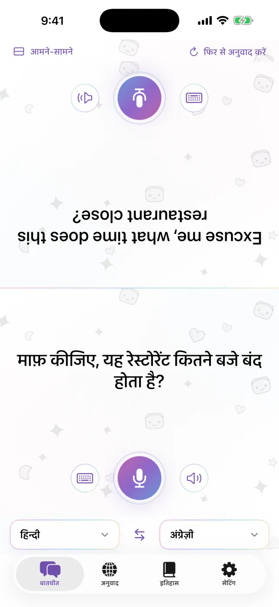
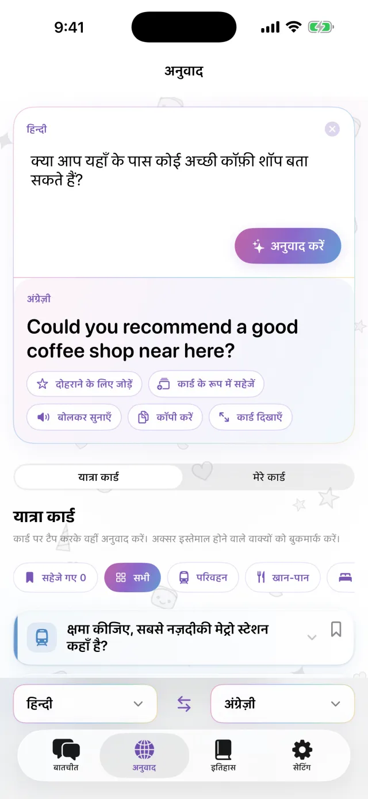
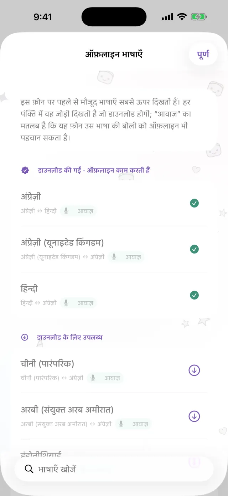
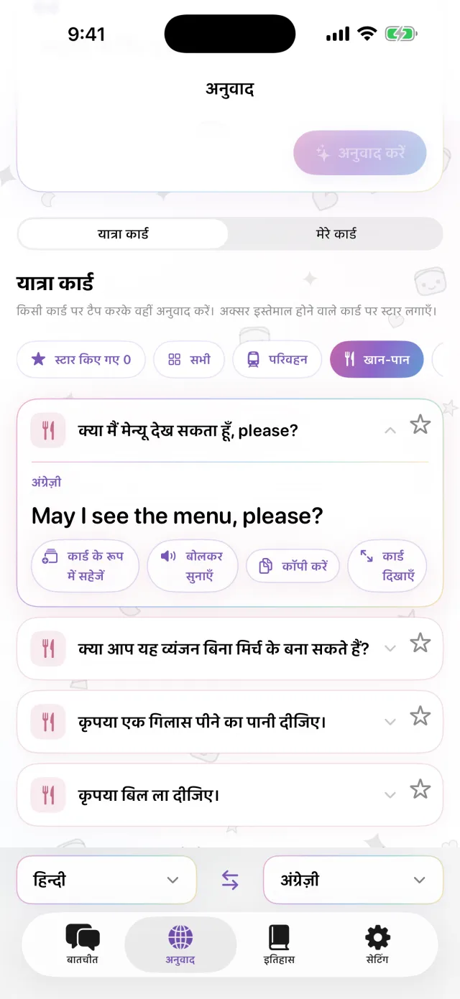
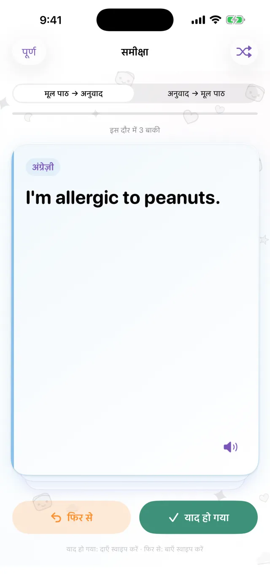

iPhone के लिए अनुवादक
iPhone के लिए अनुवादक
iPhone को बीच में रखें।
बस इतना ही।
माइक दबाकर बोलें। अनुवाद स्क्रीन के दूसरे आधे हिस्से में, सामने वाले की ओर दिखता है। वे जवाब दें तो भी यही तरीका है। भाषाएँ पहले डाउनलोड कर लें, तो इंटरनेट के बिना भी चलता है।
जल्द ही App Store पर आ रहा है- लगभग 20 भाषाएँ
- डाउनलोड के बाद ऑफ़लाइन
- साइन अप की ज़रूरत नहीं

टाइप करना
बोल नहीं सकते? टाइप करें।
शांत जगह में, या जब सामने वाला बहुत तेज़ बोले, तो सीधे टाइप करें। अनुवाद को पूरी स्क्रीन पर बड़ा करके उन्हें दिखा सकते हैं।
- कॉपी करें, या बोलकर सुनें
- दोनों भाषाएँ एक टैप में बदलें

ऑफ़लाइन
इंटरनेट न हो, तब भी अनुवाद
अनुवाद, आवाज़ पहचान और बोलकर सुनाना, सब आपके iPhone पर ही होता है। यात्रा से पहले ज़रूरी भाषाएँ डाउनलोड कर लें। फिर विमान में या SIM लेने से पहले भी चलता है। आप जो बोलते हैं वह किसी सर्वर पर नहीं भेजा जाता, और रिकॉर्डिंग सहेजी नहीं जाती।

वाक्य कार्ड
जो बात हर बार कहनी पड़ती है, उसे सहेजें
होटल का पता, खाने की एलर्जी, जिस स्टेशन को ढूँढ रहे हैं। इन्हें कार्ड के रूप में सहेजें, तो दोबारा टाइप नहीं करना पड़ेगा। कार्ड पर टैप करें और वह सामने वाले की भाषा में अनुवादित हो जाता है। परिवहन, खाने-पीने, ठहरने और खरीदारी के तैयार कार्ड भी शामिल हैं।

Pro
सहेजे वाक्यों को समय पर दोहराएँ
किसी वाक्य पर तारे को टैप करके उसे दोहराने के लिए सहेजें। याद रहे तो वह 1, 3, 7, 14 और फिर 30 दिन बाद आता है। याद न रहे तो उसी दिन फिर दिखता है। मूल वाक्य से अनुवाद याद कर सकते हैं, या अनुवाद से मूल वाक्य। यह सुविधा Pro में है।

इन मौकों पर काम आता है
- छोटे रेस्तराँ में खाना मँगवाना
- टैक्सी ड्राइवर को पता बताना
- दवाई की दुकान पर एलर्जी बताना
- होटल के रिसेप्शन पर सामान रखवाना
- रास्ता पूछना
30 सेकंड में देखें
इस वीडियो में एयरप्लेन मोड चालू है।
मुख्य जानकारी
| भाषाएँ | लगभग 20 (वे भाषाएँ जिनका Apple डिवाइस पर अनुवाद करता है) |
|---|---|
| ऑफ़लाइन | हाँ, भाषाएँ डाउनलोड करने के बाद |
| बोलकर इनपुट | हाँ। कुछ भाषाओं में केवल टाइप कर सकते हैं |
| खाता | ज़रूरी नहीं |
| कीमत | मुफ़्त। Pro के लिए अलग शुल्क है (नीचे देखें) |
| ज़रूरत | iOS 18 या उसके बाद वाला iPhone |
- पहली बार भाषाएँ डाउनलोड करने के लिए इंटरनेट चाहिए।
- App Store पर कीमतें आपकी स्थानीय मुद्रा में दिखती हैं।
मुफ़्त और Pro
मुफ़्त
- आमने-सामने बातचीत
- टाइप करना और पूरी स्क्रीन पर दिखाना
- ऑफ़लाइन अनुवाद
- यात्रा कार्ड और अपने 3 कार्ड
- छोटा बैनर विज्ञापन
Pro
- कोई विज्ञापन नहीं
- जितने चाहें उतने कार्ड
- अनुवाद का इतिहास और समय पर समीक्षा
साप्ताहिक, मासिक, या एक बार में खरीदें।
जाने से पहले भाषाएँ डाउनलोड कर लें।
जल्द ही App Store पर आ रहा हैiPhone · iOS 18 या उसके बाद · डाउनलोड मुफ़्त · हर स्क्रीन कैसे काम करती है